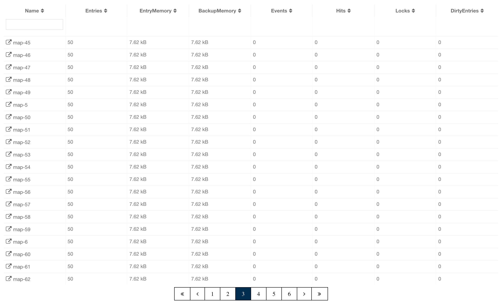
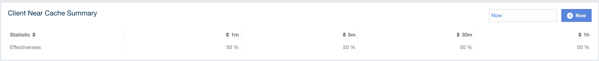
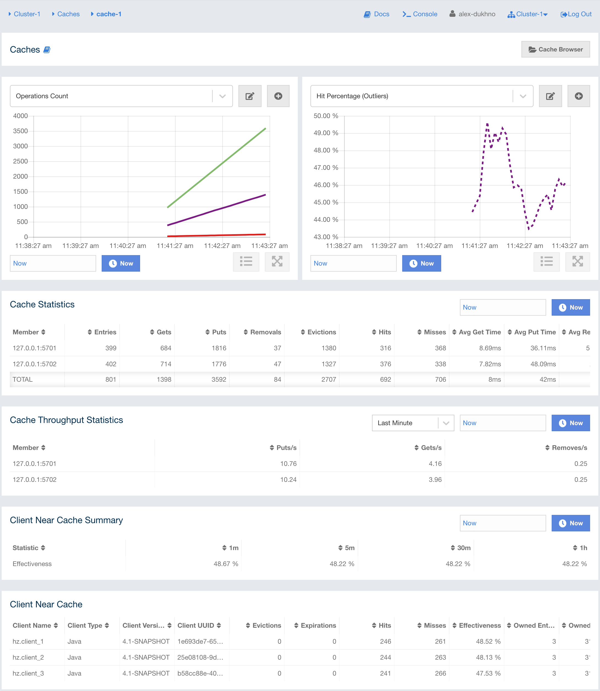
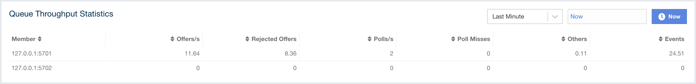

Monitoring Data Structures
This chapter provides information on how you can monitor the Hazelcast data structures in your cluster.
Maps
You can see a list of all the maps in your cluster by clicking on the Maps menu item on the left panel. A new page is opened on the right, as shown below.

You can filter the maps shown and you can also sort the table by clicking on the column headers. Clicking on a map name opens a new page for monitoring that map instance on the right, as shown below.

The below subsections explain the portions of this window.
Map Browser
Use the Map Browser tool to retrieve properties of the entries stored in the selected map. To open the Map Browser tool, click on the Map Browser button, located at the top right of the window. Once opened, the tool appears as a dialog, as shown below.

Once the key and the key’s type are specified and the Browse button is clicked, the key’s properties along with its value are listed.
-
Value: Value that is associated with the key in the map.
-
Class: Key’s Java class.
-
Memory Cost: Space, in bytes, the key and value cost to be hold in memory.
-
Creation Time: First time the key was put.
-
Expiration Time: Time the key was expired and deleted from the map (depends on expiration policy configuration).
-
Hits: Count of reads by the clients for the key’s value in a map.
-
Last Access Time: Last time the clients read the key’s value.
-
Last Stored Time: Last time the key was stored into the storage.
-
Version: Count of times where the key’s value has been overwritten.
-
Time to Live: Last set time to live (in milliseconds).
-
Max Idle: Last set max idle time (in milliseconds).
If you are using a serialization mechanism other than standard Java
serialization for storing values in your map, you need to
configure the client that Management Center uses for connecting to the
cluster (as described here). Note that if you
have any custom classes, you need to add the JAR containing them
to Management Center’s classpath before starting it as described in
the Providing an Extra Classpath section. In case the value stored in the map is not a String
or of another Java primitive type, it is rendered as a JSON value as shown below:

Map Config
Use the Map Config tool to set the selected map’s attributes, such as the max size, TTL, and eviction policy. To open the Map Config tool, click on the Map Config button, located at the top right of the window. Once opened, the tool appears as a dialog, as shown below.

You can change any attribute and click the Update button to save your changes.
Map Monitoring
Besides the Map Browser and Map Config tools, the map monitoring page shows two widgets that show various metrics of the map. See the Widget section for more information.
Under these charts are Map Statistics, Map Throughput, Member Near Cache, and Client Near Cache data tables.

From left to right, this table lists the following:
-
Members: IP address and port of the member.
-
Entries: Number of entries owned by the member.
-
Gets: Number of get operations received by the member.
-
Puts: Number of put operations received by the member.
-
Removes: Number of remove operations received by the member.
-
Entry Memory: Memory cost of owned entries in the member.
-
Backups: Number of backup entries held by the member.
-
Backup Memory: Memory cost of backup entries held by the member.
-
Events: Number of events received by the member.
-
Hits: Number of hits (reads) of the entries that are owned by the member, including those which are no longer in the map (for example, may have been evicted). The number of hits may be inaccurate after a partition is migrated to a new owner member.
-
Locks: Number of currently locked entries owned by the member.
-
Dirty Entries: Number of entries that the member owns and are dirty (updated but not persisted yet). In the cases where MapStore is enabled, these are the entries that are put to/removed from the map but not written to/removed from a database yet.
You can ascend or descend the order of the listings by clicking on the column headings.
Map Throughput Table provides information about the operations (get, put, remove) performed on each member in the map, as shown below.

From left to right, this table lists the following:
-
Members: IP address and port of the member.
-
Puts/s: Number of put operations per second on the member.
-
Gets/s: Number of get operations per second on the member.
-
Removes/s: Number of remove operations per second on the member.
-
Avg Put Latency: Average latency of put operations on the member.
-
Avg Get Latency: Average latency of get operations on the member.
-
Avg Remove Latency: Average latency of remove operations on the member.
-
Max Avg Put Latency: Maximum average latency of put operations on the member.
-
Max Avg Get Latency: Maximum average latency of get operations on the member.
-
Max Avg Remove Latency: Maximum average latency of remove operations on the member.
You can select the time period in the combo box placed on the top right corner of the window, for which the table data will be shown. Available values are Since Beginning, Last Minute, Last 10 Minutes and Last 1 Hour.
To ascend or descend the order of the listings, click on the column headings.
Member Near Cache Table provides information about the Member Near Caches, if available, on each member, as shown below.

From left to right, this table lists the following:
-
Members: IP address and port of the member which has Near Caches defined for the maps.
-
Entries: Count of the entries in each Near Cache.
-
Entry Memory: Memory cost of the entries in each Near Cache.
-
Hits: Count of the entries read from the Near Cache.
-
Misses: Count of the entries which cannot be found in the Near Cache when requested to read.
-
Ratio: Hits/Misses ratio.
To ascend or descend the order of the listings, click on the column headings.
Client Near Cache Summary provides summary information related to the Near Cache statistics aggregated for all the clients that have Near Cache enabled for this map. Aggregated statistics are shown for the following periods: 1 minute, 5 minutes, 30 minutes and 60 minutes. Currently, the table shows overall Near Cache effectiveness, calculated as hits/total reads ratio.
| You need to enable the statistics for clients to see them here. See the Monitoring Clients section for details. |

Client Near Cache Table provides information about the Near Caches statistics, if available, on each client that has Near Cache enabled for this map, as shown below.
| You need to enable the statistics for clients to see them here. See the Monitoring Clients section for details. |

From left to right, this table lists the following:
-
Client Name: Name of the client instance which has Near Cache defined for the map.
-
Client Type: Type of the client.
-
Client Version: Version of the client.
-
Client UUID: Client unique identifier.
-
Evictions: Number of evictions of Near Cache entries owned by the client.
-
Expirations: Number of TTL and max-idle expirations of Near Cache entries owned by the client.
-
Hits: Number of hits (reads) of Near Cache entries owned by the client.
-
Misses: Number of misses of Near Cache entries owned by the client.
-
Effectiveness: Hits/total reads ratio.
-
Owned Entry Count: Number of Near Cache entries owned by the client.
-
Owned Entry Memory Cost: Memory cost of Near Cache entries owned by the client.
To ascend or descend the order of the listings, click on the column headings.
Caches
You can see a list of all the caches in your cluster by clicking on the Caches menu item on the left panel. A new page is opened on the right, as shown below.

You can filter the caches shown and you can also sort the table by clicking on the column headers. Clicking on the cache name opens a new page for monitoring that cache instance on the right, as shown below.

On top of the page, there are two widgets that show various metrics of the cache. See the Widget section for more information.
Under these charts are Cache Statistics, Cache Throughput, and Client Near Cache data tables.
Cache Statistics Table provides the selected cache’s statistics distributed over the members, as shown below.

From left to right, this table lists the following in real time:
-
Members: IP address and port of the member.
-
Entries: Number of entries in this cache owned by the member.
-
Gets/Puts/Removals: Number of the get/put/remove operations for this cache received by the member.
-
Evictions: Number of evictions of Cache entries owned by the member.
-
Hits: Number of the reads performed for this cache’s entries.
-
Misses: Number of the entries which cannot be found in the cache when requested to read.
-
Avg Get/Put/Removal Time: Average elapsed time for the get/put/removal operations for the cache on each member.
To ascend or descend the order of the listings, click on the column headings.
Cache Throughput Statistic Table provides information about the operations (get, put, remove) performed on each member for the selected cache.

From left to right, this table lists the following:
-
IP address and port of each member.
-
Put, get and remove operation rates on each member for this cache.
You can select the period in the combo box placed at the top right corner of the window, for which the table data will be shown. Available values are Since Beginning, Last Minute, Last 10 Minutes and Last 1 Hour.
You can ascend or descend the order of the listings in each column by clicking on column headings.
Client Near Cache Summary provides summary information related to the Near Cache statistics aggregated for all the clients that have Near Cache enabled for this cache. Aggregated statistics are shown for the following periods: 1 minute, 5 minutes, 30 minutes and 60 minutes. Currently, the table shows overall Near Cache effectiveness, calculated as hits/total reads ratio.
| You need to enable the statistics for clients to see them here. See the Monitoring Clients section for details. |
Client Near Cache Table provides information about the Near Caches statistics, if available, on each client that has Near Cache enabled for this cache, as shown below.
| You need to enable the statistics for clients to see them here. See the Monitoring Clients section for details. |
From left to right, this table lists the following:
-
Client Name: Name of the client instance which has Near Cache enabled for the map.
-
Client Type: Type of the client.
-
Client Version: Version of the client.
-
Client UUID: Client unique identifier.
-
Evictions: Number of evictions of Near Cache entries owned by the client.
-
Expirations: Number of TTL and max-idle expirations of Near Cache entries owned by the client.
-
Hits: Number of hits (reads) of Near Cache entries owned by the client.
-
Misses: Number of misses of Near Cache entries owned by the client.
-
Effectiveness: Hits/total reads ratio.
-
Owned Entry Count: Number of Near Cache entries owned by the client.
-
Owned Entry Memory Cost: Memory cost of Near Cache entries owned by the client.
To ascend or descend the order of the listings, click on the column headings.
You need to enable the statistics for caches to monitor them
in the Management Center. Use the <statistics-enabled> element or
setStatisticsEnabled() method in declarative or programmatic
configuration, respectively, to enable the statistics. Please refer
to the JCache Declarative Configuration
section for more information.
|
Replicated Maps
You can see a list of all the Replicated Maps in your cluster by clicking on the Replicated Maps menu item on the left panel. A new page is opened on the right, as shown below.

You can filter the Replicated Maps shown and you can also sort the table by clicking on the column headers. Clicking on a Replicated Map name opens a new page for monitoring that Replicated Map instance on the right, as shown below.

In this page, you can monitor metrics of the selected Replicated Map. The page shows two widgets that show various metrics of the Replicated Map. See the the Widget section for more information.
Under these charts are Replicated Map Statistics and Replicated Map Throughput data tables.

From left to right, this table lists the following:
-
Members: IP address and port of the member.
-
Entries: Number of entries in this Replicated Map owned by the member.
-
Gets/Puts/Removals: Number of the get/put/remove operations for this Replicated Map received by the member.
-
Entry Memory: Memory cost of the owned entries in the member.
-
Events: Number of the events received by the member.
-
Hits: Number of the reads performed for this Replicated Map’s entries.
Replicated Map Throughput Table provides information about operations (get, put, remove) performed on each member in the selected Replicated Map.

From left to right, this table lists the following:
-
IP address and port of each member
-
put, get, and remove operations on each member
-
average put, get, and remove latencies
-
maximum average put, get, and remove latencies on each member.
You can select the period from the combo box placed at the top right corner of the window, in which the table data is shown. Available values are Since Beginning, Last Minute, Last 10 Minutes and Last 1 Hour.
To ascend or descend the order of the listings, click on the column headings.
MultiMaps
You can see a list of all the MultiMaps in your cluster by clicking on the MultiMaps menu item on the left panel. A new page is opened on the right, as shown below.

You can filter the MultiMaps shown and you can also sort the table by clicking on the column headers. Clicking on a MultiMap name opens a new page for monitoring that MultiMap instance on the right.
MultiMap is a specialized map where you can associate a key with multiple values. This monitoring option is similar to the Maps option: the same monitoring charts and data tables monitor MultiMaps. The differences are that you cannot browse the MultiMaps and re-configure it. Please see the Managing Maps.
Queues
You can see a list of all the queues in your cluster by clicking on the Queues menu item on the left panel. A new page is opened on the right, as shown below.

You can filter the queues shown and you can also sort the table by clicking on the column headers. Clicking on a queue name opens a new page for monitoring that queue instance on the right, as shown below.

On top of the page, there are two widgets that show various metrics of the queue. See the the Widget section for more information.
Under these charts are Queue Statistics and Queue Throughput Statistics tables.
Queue Statistics table provides item and backup item counts in the queue and age statistics of items and backup items at each member, as shown below.

From left to right, this table lists the IP address and port, items and backup items on the queue of each member, and maximum, minimum and average age of items in the queue. The order of the listings in each column can be ascended or descended by clicking on the column headings.
Queue Operation Statistics table provides information about the operations (offers, polls, events) performed on the queues, as shown below.

From left to right, this table lists the IP address and port of each member, and counts of offers, rejected offers, polls, poll misses and events.
You can select the period in the combo box placed at the top right corner of the window to show the table data. Available values are Since Beginning, Last Minute, Last 10 Minutes and Last 1 Hour.
Click on the column headings to ascend or descend the order of the listings.
Topics
You can see a list of all the topics in your cluster by clicking on the Topics menu item on the left panel. A new page is opened on the right, as shown below.

You can filter the topics shown and you can also sort the table by clicking on the column headers. Clicking on a topic name opens a new page for monitoring that topic instance on the right, as shown below.

On top of the page, there are two widgets that show various metrics of the topic. See the the Widget section for more information.
Under these charts is the Topic Operation Statistics table. From left to right, this table lists the IP addresses and ports of each member, and counts of the messages published and received per second in real-time. You can select the period in the combo box placed at top right corner of the table to show the table data. The available values are Since Beginning, Last Minute, Last 10 Minutes and Last 1 Hour.
Click on the column heading to ascend or descend the order of the listings.
Reliable Topics
You can see a list of all the Reliable Topics in your cluster by clicking on the Reliable Topics menu item on the left panel. A new page is opened on the right, as shown below.

You can filter the Reliable Topics shown and you can also sort the table by clicking on the column headers. Clicking on a Reliable Topic name opens a new page for monitoring that Reliable Topic instance on the right, as shown below.

On top of the page, there are two widgets that show various metrics of the reliable topic. See the the Widget section for more information.
Under these charts is the Reliable Topic Operation Statistics table. From left to right, this table lists the IP addresses and ports of each member, and counts of the messages published and received per second in real-time. You can select the period in the combo box placed at top right corner of the table to show the table data. The available values are Since Beginning, Last Minute, Last 10 Minutes and Last 1 Hour.
Click on the column heading to ascend or descend the order of the listings.
Executors
You can see a list of all the Executors in your cluster by clicking on the Executors menu item on the left panel. A new page is opened on the right, as shown below.

You can filter the Executors shown and you can also sort the table by clicking on the column headers. Clicking on an Executor name opens a new page for monitoring that Executor instance on the right, as shown below.

On top of the page, there are two widgets that show various metrics of the Executor. See the the Widget section for more information.

When you click on a desired monitoring, the chart loads with the
selected option. To open a chart as a separate dialog, click on the
 button placed at top right of each
chart. The below monitoring charts are available:
button placed at top right of each
chart. The below monitoring charts are available:
-
Pending: Monitors the pending executors. Y-axis is the executor count.
-
Started: Monitors the started executors. Y-axis is the executor count.
-
Start Lat. (msec.): Shows the latency when executors are started. Y-axis is the duration in milliseconds.
-
Completed: Monitors the completed executors. Y-axis is the executor count.
-
Comp. Time (msec.): Shows the completion period of executors. Y-axis is the duration in milliseconds.

From left to right, this table lists the IP address and port of members, the counts of pending, started and completed executors per second, and the execution time and average start latency of executors on each member. Click on the column heading to ascend or descend the order of the listings.
Locks
You can use the scripting feature of the Management Center to monitor the locks in your cluster. See the Scripting section to learn how to use this feature.
You can use the below scripts to retrieve various information about the locks in your cluster.
To find the number of active locks in your cluster, use the following script:
var findLocks = function() {
var lockstr = '';
var node = hazelcast.getCluster().getLocalMember();
var locks = hazelcast.node.nodeEngine.getService('hz:impl:lockService').getAllLocks();
return "Active Lock Count : " + locks.size();
}
findLocks();To print the locks in your cluster, use the following script:
var findLocks = function() {
var lockStr = '';
var distributedObjects = hazelcast.getDistributedObjects();
for each(distributedObject in distributedObjects) {
if(distributedObject.getServiceName().equals("hz:impl:lockService")){
lockStr += distributedObject.getName() + '\n';
}
}
return lockStr;
}
findLocks();To force unlock a lock in your cluster, use the following script:
var forceUnlock = function(lockName) {
hazelcast.getLock(lockName).forceUnlock();
return 'OK';
}
forceUnlock('your_Lock_Name');To check if a lock is being hold by a member, use the following script:
var isLocked = function(lockName) {
var locked = hazelcast.getLock(lockName).isLocked();
return lockName + ' -> ' + locked;
}
isLocked('your_Lock_Name');PN Counters
You can see a list of all the PN counters in your cluster by clicking on the Counters menu item on the left panel. A new page is opened on the right, as shown below.

You can filter the counters shown and you can also sort the table by clicking on the column headers. The monitoring data available are:
-
Increment Operations/s: Average number of times the counter was incremented per second during the last timeslice.
-
Decrement Operations/s: Average number of times the counter was decremented per second during the last timeslice.
-
Number of Replicas: Number of member instances that have a state for the counter.
Clicking on a counter name opens a new page for monitoring that specific counter instance, as shown below.

The table can likewise be sorted by clicking the column headers. It shows IP and port of the members that have a state for the specific counter named in the page’s title. The monitoring data available are:
-
Increment Operations/s: Average number of times the counter was incremented on that member per second during the last timeslice
-
Decrement Operations/s: Average number of times the counter was decremented on that member per second during the last timeslice
-
Value: Current value of the counter on that member.
Flake ID Generators
You can see a list of all Flake ID Generators in your cluster by clicking on the ID Generators menu item on the left panel. A new page is opened on the right, as shown below.

You can filter the generators shown and you can also sort the table by clicking on the column headers. The monitoring data available are:
-
Avg. Batch Requests: Average count of batch requests coming from all the members to a generator, i.e., total batch requests from all members to a generator divided by the member count for that generator.
-
Avg. Batch Size: Average size of the ID batches created by a generator, i.e., total number of IDs generated (the sum of IDs for all batches) for all members divided by the total count of batch requests coming from all members.
Clicking on a generator name opens a new page for monitoring that specific generator instance, as shown below.

The table can likewise be sorted by clicking the column headers. It shows IP and port of the members that have a state for the specific generator named in the page’s title. The monitoring data available are:
-
Batch Requests: Total count of batch requests to a generator by this member.
-
Avg. Batch Size: Average size of the ID batches created for this member, i.e., total number of IDs generated (the sum of IDs for all batches) for this member divided by the total count of batch requests coming from this member.
| The operations per second is not the number of new IDs generated or used but the number of ID batches. The batch size is configurable, usually it contains hundreds or thousands of IDs. A client uses all IDs from a batch before a new batch is requested. |